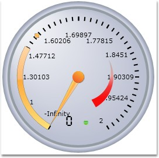

Essential Circular gauge for Silverlight supports logarithmic label ticks. This can be achieved by setting the IsLogarithmic property to True, and specifying a valid LogBase value. The value of the LabelTickSet is calculated based upon the base provided in the Logbase.
The following code snippet illustrates on how to set the logarithmic scale for a Circular gauge.
|
[XAML]
<sfgauge:CircularGauge Height="Auto" Width="Auto" Radius="170" Name="circularGauge1" FrameType="FullCircle" Margin="3" > <sfgauge:CircularGauge.Scales> <sfgauge:CircularScale x:Name="m_scale" Radius="100" StartAngle="110" GapSweepAngle="320" ScaleBarSize="5" ShadowOffset="5" Minimum="0" Maximum="100" MinorIntervalValue="2" MajorIntervalValue="10" BorderBrush="Gray" Background="Silver" Location="50,50"> <sfgauge:CircularScale.Ticks> <sfgauge:LabelTickSet FontSize="13" LabelForeground="Silver" Name="m_label" IsLogarithmic="True" LogBase="2" TickPlacement="Outside" VerticalContentAlignment="Bottom" DistanceFromScale="0"/> </sfgauge:CircularScale.Ticks> </sfgauge:CircularScale> </sfgauge:CircularGauge.Scales> </sfgauge:CircularGauge> |
|
[C#]
CircularGauge circulargauge1 = new CircularGauge(); LayoutRoot.Children.Add(circulargauge1); CircularScale c_scale = new CircularScale(); c_scale.Radius = 110; c_scale.StartAngle = 120; c_scale.GapSweepAngle = 300; c_scale.ScaleBarSize = 10; c_scale.Location = new Point(50, 50); c_scale.ShadowOffset = 5; c_scale.ShadowOffset = 5; c_scale.Minimum = 0; c_scale.Maximum = 100; c_scale.MinorIntervalValue = 2; c_scale.MajorIntervalValue = 10; c_scale.Background = new SolidColorBrush(Colors.LightGray); c_scale.BorderBrush = new SolidColorBrush(Colors.Blue); c_scale.BorderThickness = new Thickness(0.5); circulargauge1.Scales.Add(c_scale);
// Adding LabelTick LabelTickSet c_label = new LabelTickSet(); c_label.FontSize = 15; c_label.LabelForeground = new SolidColorBrush(Colors.White); c_label.FontFamily = new FontFamily("Ariel"); c_label.DistanceFromScale = 5; c_label.IsLogarithmic = true; c_label.Logbase= 2; c_label.TickPlacement = ScalePlacement.Inside; c_label.Foreground = new SolidColorBrush(Colors.Brown); c_scale.Ticks.Add(c_label); |
